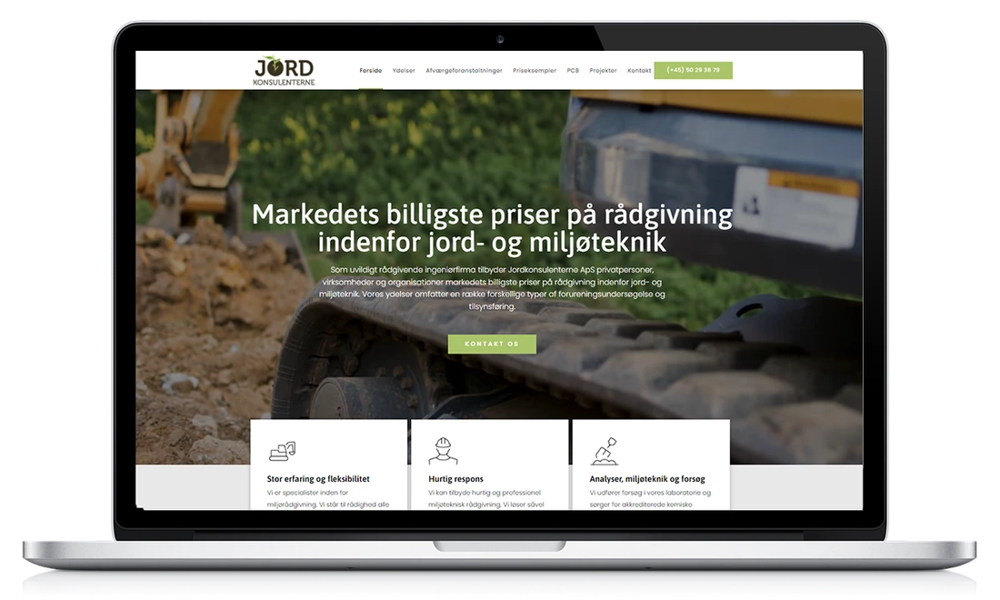
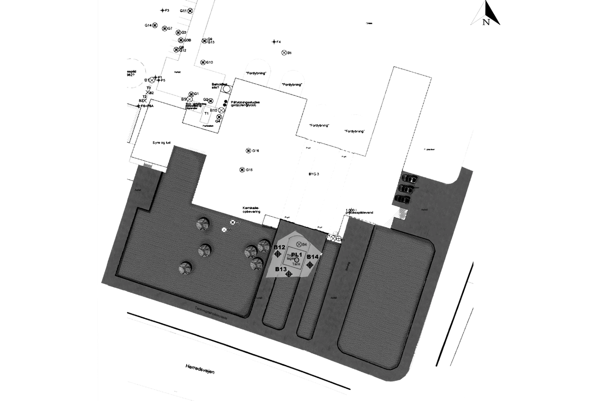

PROJECT 01 — ENGINEERING DESIGN & WEB DEVELOPMENT
Web Development.
Web development meets practical environmental engineering.
My work at Jordkonsulenterne combined technical engineering tasks with responsibility for a professional online presence. I worked with soil sampling, AutoCAD drawings, photography and the company website.

Project gallery.

THE PROJECT
Understand the challenge.
Environmental engineering requires precise drawings and reliable communication. Technical results had to be understandable to municipalities, clients and colleagues, while the company needed a clear and current website.
Connecting technical accuracy with useful, accessible digital communication.
HOW I APPROACHED IT
From idea to execution.
- 01
Engineering information
Prepared AutoCAD 2D drawings and visual material to communicate soil contamination and environmental plans.
- 02
Web experience
Designed, maintained and regularly updated the WordPress site using HTML, CSS, JavaScript and graphics.
- 03
Project documentation
Supported soil sampling, photography and the presentation of laboratory and field results.
TOOLS & TECHNOLOGIES
- WordPress
- HTML5
- CSS3
- JavaScript
- AutoCAD 2D
- Photoshop
- GIS
WHAT IT SHOWS
What the work delivered.
The work combined practical environmental documentation with a more useful company website. It strengthened my ability to move between engineering requirements, communication and implementation.
The original case study also includes examples of freelance web design and technical illustrations.
CONTINUE EXPLORING
Explore the work.
The original project and available source repositories are linked below.
BACK TO ALL SIX PROJECTS